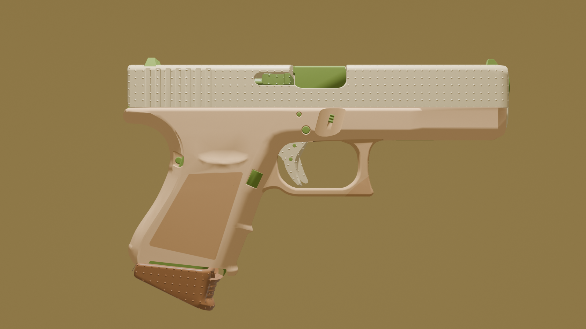
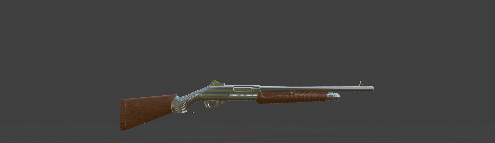

Passionné de création numérique, je me forme en autodidacte à la modélisation, au texturing et à l'animation. Voici mes projets.
Voir le projet GlockDans le jeu Counter-Strike 2 (CS2), les armes peuvent recevoir des « skins » : des apparences personnalisées qui changent la texture et les couleurs de l'arme, sans modifier sa forme. C'est une façon de rendre chaque arme unique.
Ce qui est intéressant, c'est que n'importe qui peut créer son propre skin et le proposer à la communauté du jeu, via une plateforme appelée le Workshop. Les joueurs peuvent alors voter pour leurs créations préférées, et les skins les plus appréciés peuvent être ajoutés officiellement dans le jeu.
C'est exactement ce que j'ai voulu faire avec Blender : partir du modèle d'une arme, créer ma propre texture par-dessus pour la transformer en skin, puis réaliser une animation pour la présenter. Un vrai projet complet, de l'idée jusqu'au résultat final.
Du premier essai jusqu'au skin complet, chaque projet m'a permis d'apprendre de nouvelles choses sur Blender.

Un skin complet sur le modèle du Glock : chocolat blanc, éclats de pistache, simulation de liquide et animation de présentation.
Découvrir
Mon tout premier projet : un shotgun en métal, avec lequel j'ai découvert les bases de Blender.
En savoir plusMon tout premier projet sur les skin CsGo sur Blender : un shotgun en métal. C'est avec lui que j'ai vraiment mis les mains dans le logiciel pour la première fois.
J'y ai appris à travailler la texture et le matériau métallique, à comprendre comment fonctionnent les UV, et surtout à me repérer sur les touches et les raccourcis clavier.
Petit à petit, en tâtonnant, j'ai fini par tout comprendre : comment naviguer, appliquer un matériau, obtenir un rendu propre. Ce projet m'a donné la base pour attaquer le Glock avec plus d'assurance.
Avant ce projet, j'avais déjà découvert Blender en suivant plusieurs tutoriels. J'ai notamment réalisé un projet complet de A à Z sur la création d'un donut, incluant la modélisation, les matériaux, l'éclairage et le rendu final. Malheureusement, ces travaux avaient été effectués sur l'ordinateur de mon lycée et je n'ai plus accès aux fichiers aujourd'hui.
Je pense continuer mon projet Glock "Pistache Chocolat Blanc" plutôt que de le publier dans son état actuel, car je ne pense pas que ce soit suffisant. Je sais que j'ai encore beaucoup de choses à améliorer : le skin en lui-même, l'animation de la caméra, l'effet de l'eau, l'arrière-plan et la lumière. Tout cela est assez nouveau pour moi. Je vais donc modifier et perfectionner ce projet avant de le publier sur le Steam Workshop, afin de recueillir des avis et, potentiellement, d'être accepté dans le jeu.
Après le projet du Glock, je vais réaliser la modélisation complète de ma chambre afin de perfectionner mes bases. Ensuite, pour mon plus grand projet, je compte créer une animation de A à Z : je vais tout modéliser et tout animer moi-même, en intégrant notamment le rigging d'un personnage que j'aurai entièrement créé.